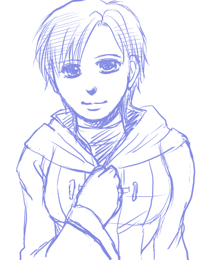

イラストコーナー更新、そしてこのサイトの更新は2ヶ月ぶりくらい。ブログの更新も久々ですね…。いいかげん、下の記事のにょたティバを流したいと思ってたのですがｗｗ またしてもアレなイラストをアップして意味がないという。
さしずめ、シスター・キルロイってとこか…。あんまり違和感ないかも。もともと乙女なのにリアルに乙女になってしまった。ワユとのカプだったら百合でいいなあ…ｗｗ アイク受関係ないけどｗｗ ここはにょた全般を扱うサイトなのでまあ！
本当はシノンのにょた（それもどうかと思うが）描こうとしたけど攻略本でシノンの隣にいたキルロイさんが目に付いたので衝動的にやってしもた。
つーわけで、更新自体は…シノアイ♀です！ シノンは男ですｗｗ
イラスト2点アップ。2枚目の方はハダカなので要注意。
1枚目は昨日、もそもそと絵チャで一人厚塗りの練習として描いてました。ちゃんと描きあげられるのか謎…というくらいにしてやってたんですがなんとか完成してよかった。わりとシノンって描きやすいかも…？ と思って調子こいて今度はSAIでまた絡み描いてみた。
妙にシノアイに萌えてしまって困る。にょたアイクでだともう。
普段、わーわー言い合って反目してるのに、夜になるとそれなりに仲がいいって萌える…！ まず、好きだ…とか素直に言い合ったりしないんだけどスキンシップで補ったりする。やることはしっかりやってる的な。団内恋愛禁止じゃないけど、なんとなく秘密だったりするとまたいい。でもわりとバレバレだったりする。
そろそろにょた話また書きたいなー！